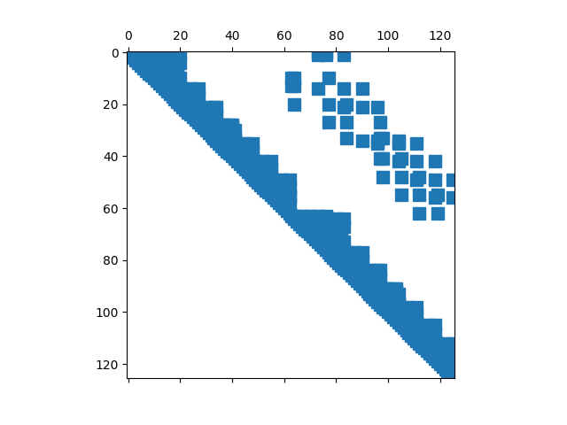

Note
Click here to download the full example code
Transfer APDLMath Sparse Matrices to and from SciPy Sparse Matrices#
This tutorial will show how to get APDLMath sparse matrices (typically stiffness or mass matrices extracted from APDL .Full Files) into SciPy Sparse Matrices.
import matplotlib.pylab as plt
from ansys.mapdl.core import launch_mapdl
from ansys.mapdl.core.examples import vmfiles
mapdl = launch_mapdl()
mm = mapdl.math
Load and solve verification manual example 153. Then load the stiffness matrix into APDLmath.
Out:
Sparse APDLMath Matrix (126, 126)
Copy this APDLMath Sparse Matrix to a SciPy CSR matrix and plot the graph of the sparse matrix
Out:
<matplotlib.lines.Line2D object at 0x7f4f6d41d100>
You can access the 3 vectors that describe this sparse matrix with.
pk.datapk.indicespk.indptr
See the scipy documentation of the csr matrix at scipy.sparse.csr_matrix for additional details.
print(pk.data[:10])
print(pk.indices[:10])
print(pk.indptr[:10])
Out:
[ 0.57249304 0.56369167 -0.28624652 -0.28184583 -0.24789676 -0.24408565
-0.14312326 -0.14092292 0.77576289 -0.37033122]
[ 0 1 4 7 10 13 73 76 1 4]
[ 0 8 19 31 42 49 55 60 63 71]
### Create a APDLMath Sparse Matrix from a SciPy Sparse CSR Matrix
Here, we transfer the scipy CSR matrix back to MAPDL. While
this example uses a matrix that was originally within MAPDL, you can
load any CSR matrix to MAPDL.
my_mat = mm.matrix(pk, "my_mat", triu=True)
my_mat
Out:
Sparse APDLMath Matrix (126, 126)
Check initial matrix k and my_mat are exactly the sames:
We compute the norm of the difference, should be zero
msub = k - my_mat
mm.norm(msub)
Out:
0.0
CSR Representation in MAPDL#
Printing the list of objects in the MAPDL space, we find:
2 SMAT objects, corresponding to the
k,MSubmatrices,with encrypted names
The
my_matSMAT object. Its size is zero, because the 3vectors are stored separately
the 3 vectors of the CSR my_mat structure:
MY_MAT_PTR,MY_MAT_INDand
MY_MAT_DATA
mm.status()
Out:
APDLMATH PARAMETER STATUS- ( 6 PARAMETERS DEFINED)
Name Type Mem. (MB) Dims Workspace
DVBSGG SMAT 0.011 [126:126] 1
MY_MAT SMAT 0.000 [126:126] 1
SFLGFF SMAT 0.011 [126:126] 1
MY_MAT_DATA VEC 0.006 738 1
MY_MAT_IND VEC 0.001 127 1
MY_MAT_PTR VEC 0.003 738 1
MAPDL Python Matrix Correspondence#
To determine which MAPDL object corresponds to which Python object, access the id property of the Python object.
Out:
name(k)=DVBSGG
name(my_mat)=my_mat
name(msub)=SFLGFF
stop mapdl
mapdl.exit()
Total running time of the script: ( 0 minutes 0.782 seconds)